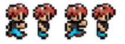

Training Recommendations
The Game Jam is not easy. The tight time constraints require competitors to have a high level of mastery over various aspects of game design.
Mastery is the key word here. It is not enough to have simply "been exposed" to some concept. That is familiarity – not mastery.
The training program given here is intended to give students mastery over the skills needed to excel at the Scholastic Game Jam.
It is also intended to be fun! Mastery requires repetition. Mastery requires holding oneself to high standards. Sometimes it can be a challenge to keep having fun while pursuing mastery. The following curriculum is intended to keep the road to mastery as fun as possible.
At the end of the day, though, the main ingredient to fun is the energy of the coach. If you’re a coach, whether you follow these recommendations or not, keep in mind that if you’re excited about the Game Jam, your competitors will be too. If you’re excited about your competitors’ ascendency to mastery, they will be too.
Be loud. Be proud. Be a coach.
1 Training Katas
Coaches will train competitors by helping them acquire the necessary skills to excel at the Game Jam competition. Competitors who have mastered these skills will earn katas. These katas serve as visual, wearable representations of a competitor’s hard work.
Kata key:
 - Meta Katas - for skills related to excelling as a Game Jam competitor.
- Meta Katas - for skills related to excelling as a Game Jam competitor.
 - Avatar Katas - for skills related to creating avatars
- Avatar Katas - for skills related to creating avatars
 - Coin Katas - for skills related to creating coin items
- Coin Katas - for skills related to creating coin items
 - Food Katas - for skills related to creating food items
- Food Katas - for skills related to creating food items
 - NPC Katas - for skills related to creating NPCs
- NPC Katas - for skills related to creating NPCs
 - Crafter Katas - for skills related to creating crafters and recipes
- Crafter Katas - for skills related to creating crafters and recipes
2 Intro Katas - (Day 1)
We recommend students earn these Intro Katas before earning any other ones. They help reinforce team values and help orient the competitors toward the challenges that face them.
2.1 Core Values Kata
"Hand motions can make these easier to remember and repeat. For example: ’It’s not about my code.’ Point to computer. ’It’s about what I can code.’ Point to brain."
Teaching Tip: Depending on the size of your class, you may want to challenge them to rattle these off 1 by 1, in pairs or small groups, or as an entire class.
To earn this kata  they need to:
they need to:
Recite the first two ThoughtSTEM core values, in less than 1 minute.
It’s not about my code. It’s about what I can code.
It’s not about me. It’s about my team.
2.2 Game Jam Specs Kata
To earn this kata  they need to:
they need to:
Recite the specs for the upcoming Game Jam, in less than 1 minute.
Teaching Tip: This is a good kata to learn as a team or in small groups.
Game Type: Survival Game
Time Limit: 1 hour
- Categories:
Avatar: 10 points
Coin Items: 25 points
Food Items: 25 points
Non-Player Characters: 45 points
Crafting: 40 points
This kata should be re-earned any time the specs change. Or any time there’s a new upcoming jam. The specs do change from time to time. (And that in itself is a valuable lesson.)
2.3 Kata Kata
This kata might be too many "repeat after me" katas. Feel free to share the info more informally.
To earn this kata  they need to:
they need to:
Recite answer to: What is a Kata?, in less than 1 minute.
Calmly
Quickly
Accurately
2.4 Racket Kata
Teaching Tip: Start with all the code projected/written on the board. Remove the lines one by one, testing the students each time.
To earn this kata  they need to:
they need to:
Within five minutes, translate an English sentence of this type:
Make a red circle that is 80 pixels across.
To code of this type:
#lang racket (require 2htdp/image) (circle 80 'solid 'red)
Note: To award this kata, a student should be able to do the above in images less than 5 minutes. But doing it once is too easy. The student should do this multiple times with different shapes: e.g. blue square, green star, etc.
3 Avatar Katas - (Day 2)
Teaching Tip: Start class reciting the first two ThoughtSTEM core values.
3.1 Paper Avatar Kata
To earn this kata  they need to:
they need to:
Recite the amount of points they get from an Avatar in their game. in less than 1 minute.
Teaching Tip: This is a good kata to learn as a team or in small groups.
- Avatar points:
Having an avatar 1 points
Any avatar within 5 minutes (Sprint Bonus) 5 points
- Avatar animation frame 1 points
Maximum 4 animations
3.2 Bronze Avatar Kata
To earn this kata  they need to:
they need to:
Within five minutes, translate an English sentence of this type:
Make a game that has an avatar in it.
To code of this type:
#lang ts-game-jam-1 (survival-game #:avatar (custom-avatar))
3.3 Silver Avatar Kata
To earn this kata  they need to:
they need to:
Within five minutes, translate an English sentence of this type:
Make a game that has a red circle that is 80 pixels across as an avatar.
To code of this type:
#lang ts-game-jam-1 (define (my-avatar) (custom-avatar #:sprite (circle 20 "solid" "red"))) (survival-game #:avatar (my-avatar))
3.4 Gold Avatar Kata
Not including drawing time, but do include exporting time.
To earn this kata  they need to:
they need to:
Within five minutes, translate an English sentence of this type:
Make a game that has a custom image as an avatar.
To code of this type:
#lang ts-game-jam-1
(define (my-avatar) (custom-avatar #:sprite ))
(survival-game #:avatar (my-avatar))
4 Coin Katas - (Day 3)
4.1 Paper Coin Kata
To earn this kata  they need to:
they need to:
Recite the amount of points they get from coin items in their game, in less than 1 minute.
- Coin points:
Each coin item 1 point, max 10
Any coin within 10 minutes (Sprint Bonus) 5 points
For each coin item matching theme 1 point, max 10
4.2 Bronze Coin Kata
To earn this kata  they need to:
they need to:
Within five minutes, translate an English sentence of this type:
Make a game that has an avatar and a coin.
To code of this type:
#lang ts-game-jam-1 (survival-game #:avatar (custom-avatar) #:coin-list (list (custom-coin)))
4.3 Silver Coin Kata
To earn this kata  they need to:
they need to:
Within five minutes, translate an English sentence of this type:
Make a game that has an avatar and a coin worth 500 points.
To code of this type:
#lang ts-game-jam-1 (define (my-coin) (custom-coin #:value 500)) (survival-game #:avatar (custom-avatar) #:coin-list (list (my-coin)))
4.4 Gold Coin Kata
Students should run the function (show-coin-sprites) on the interactions window to see a list of coin sprites.
To earn this kata  they need to:
they need to:
Within five minutes, translate an English sentence of this type:
Make a game that has an avatar and a coin with a custom sprite, name, value, and amount in world.
Teaching Tip: The order of the keywords does not matter.
To code of this type:
#lang ts-game-jam-1 (define (my-coin) (custom-coin #:sprite copper-coin-sprite #:name "copper coin" #:value 500 #:amount-in-world 20)) (survival-game #:avatar (custom-avatar) #:coin-list (list (my-coin)))
4.5 Platinum Coin Kata
Teaching Tip: As with any kata, there is not a "daily number of required katas", so you can always leave off a kata or return to it another day.
To earn this kata  they need to:
they need to:
Within five minutes, translate an English sentence of this type:
Make a game that has an avatar, and more than one coin with a custom sprite, name, value, amount in world, and respawn value.
Teaching Tip: Any mix of keywords here is okay, as long as they all have the required sprite and name, and at least one of them does not respawn.
To code of this type:
#lang ts-game-jam-1 (define (my-coin) (custom-coin #:sprite copper-coin-sprite #:name "copper coin")) (define (special-coin) (custom-coin #:sprite bat-sprite #:name "bat coin" #:value 1000 #:amount-in-world 1 #:respawn? #f)) (survival-game #:avatar (custom-avatar) #:coin-list (list (my-coin) (special-coin)))
5 Food Katas - (Day 4)
5.1 Paper Food Kata
To earn this kata  they need to:
they need to:
Recite the amount of points they get from food items in their game, in less than 1 minute.
- Food points:
Each food item 1 point, max 10
Any food within 15 minutes (Sprint Bonus) 5 points
For each food item matching theme 1 point, max 10
5.2 Bronze Food Kata
To earn this kata  they need to:
they need to:
Within five minutes, translate an English sentence of this type:
Make a game that has an avatar, a coin, and a food item.
To code of this type:
#lang ts-game-jam-1 (survival-game #:avatar (custom-avatar) #:coin-list (list (custom-coin)) #:food-list (list (custom-food #:amount-in-world 10)))
5.3 Silver Food Kata
To earn this kata  they need to:
they need to:
Within five minutes, translate an English sentence of this type:
Make a game that has an avatar, a coin, and a food that heals by 20 points.
To code of this type:
#lang ts-game-jam-1 (define (my-food) (custom-food #:amount-in-world 2 #:heals-by 20)) (survival-game #:avatar (custom-avatar) #:coin-list (list (custom-coin)) #:food-list (list (my-food)))
5.4 Gold Food Kata
Students should run the function (show-food-sprites) on the interactions window to see a list of food sprites.
To earn this kata  they need to:
they need to:
Within five minutes, translate an English sentence of this type:
Make a game that has an avatar, a coin, and a food item with a custom sprite, name, amount in world, and healing power.
Teaching Tip: Remember, the order of the keywords does not matter.
To code of this type:
#lang ts-game-jam-1 (define (my-food) (custom-food #:sprite apple-sprite #:name "apple food" #:amount-in-world 2 #:heals-by 20)) (survival-game #:avatar (custom-avatar) #:coin-list (list (custom-coin)) #:food-list (list (my-food)))
5.5 Platinum Food Kata
Teaching Tip: Remember, there is no number of "required" katas by day.
To earn this kata  they need to:
they need to:
Within ten minutes, translate an English sentence of this type:
Make a game that has an avatar, a coin, and more than one food item with a custom sprite, name, amount in world, healing power, and respawn value.
Teaching Tip: Any mix of keywords here is okay, as long as they all have the required sprite and name, and at least one of them does not respawn.
To code of this type:
#lang ts-game-jam-1 (define (my-food) (custom-food #:sprite apples-sprite #:name "apple" #:amount-in-world 2 #:heals-by 20)) (define (special-food) (custom-food #:sprite salad-sprite #:name "salad food" #:amount-in-world 1 #:heals-by 50 #:respawn? #f)) (survival-game #:avatar (custom-avatar) #:coin-list (list (custom-coin)) #:food-list (list (my-food) (special-food)))
6 NPC Katas - (Day 5)
Teaching Tip: NPC is short Non-Player Character.
6.1 Paper NPC Kata
To earn this kata  they need to:
they need to:
Recite the amount of points they get from NPCs in their game, in less than 1 minute.
- NPC points:
Each NPC item 1 point, max 5
Any NPC within 20 minutes (Sprint Bonus) 5 points
For each NPC item matching theme 1 point, max 5
For each line of NPC dialog 1 point, max 20
For each line of dialog matching theme 1 point, max 20
6.2 Bronze NPC Kata
To earn this kata  they need to:
they need to:
Within five minutes,translate an English sentence of this type:
Make a game that has an avatar, a coin, a food item, and an NPC.
To code of this type:
#lang ts-game-jam-1 (survival-game #:avatar (custom-avatar) #:coin-list (list (custom-coin)) #:food-list (list (custom-food #:amount-in-world 10)) #:npc-list (list (custom-npc)))
6.3 Silver NPC Kata
To earn this kata  they need to:
they need to:
Within five minutes, translate an English sentence of this type:
Make a game that has an avatar, a coin, a food, and an NPC that has a custom name, walking mode, and starting tile.
The tiles are numbered from 0 to 8 (0 being the top-left tile). The walking modes are: pace, wander, still, and follow.
To code of this type:
#lang ts-game-jam-1 (define (my-npc) (custom-npc #:name "Sara" #:mode 'wander #:tile 4)) (survival-game #:avatar (custom-avatar) #:coin-list (list (custom-coin)) #:food-list (list (custom-food #:amount-in-world 10)) #:npc-list (list (my-npc)))
6.4 Gold NPC Kata
To earn this kata  they need to:
they need to:
Within five minutes, translate an English sentence of this type:
Make a game that has an avatar, a coin, a food item, and a NPC with a custom name, walking mode, starting tile, and dialog.
To code of this type:
#lang ts-game-jam-1 (define (my-npc) (custom-npc #:name "Sara" #:mode 'wander #:tile 4 #:dialog (list "Why, hello there!" "Gotta go now!"))) (survival-game #:avatar (custom-avatar) #:coin-list (list (custom-coin)) #:food-list (list (custom-food #:amount-in-world 10)) #:npc-list (list (my-npc)))
6.5 Platinum NPC Kata
Teaching Tip: Remember, there is no number of "required" katas by day.
To earn this kata  they need to:
they need to:
Within ten minutes, translate an English sentence of this type:
Make a game that has an avatar, a coin, a food item, and more than one NPC.
Teaching Tip: Any mix of keywords here is okay.
To code of this type:
#lang ts-game-jam-1 (define (my-npc-1) (custom-npc #:name "Sara" #:mode 'wander #:tile 4 #:dialog (list "Why, hello there!" "Gotta go now!"))) (define (my-npc-2) (custom-npc #:name "Sonny" #:tile 6 #:mode 'pace)) (define (my-npc-3) (custom-npc #:name "Jason" #:mode 'follow)) (survival-game #:avatar (custom-avatar) #:coin-list (list (custom-coin)) #:food-list (list (custom-food #:amount-in-world 10)) #:npc-list (list (my-npc-1) (my-npc-2) (my-npc-3)))
7 Crafter Katas - (Day 6)
7.1 Paper Crafter Kata
To earn this kata  they need to:
they need to:
Recite the amount of points they get from Crafters in their game, in less than 1 minute.
- Crafter points:
Each Crafter 1 point, max 5
Any Crafter within 25 minutes (Sprint Bonus) 5 points
For each crafting recipe 1 point, max 15
For each crafting recipe matching theme 1 point, max 15
7.2 Bronze Crafter Kata
To earn this kata  they need to:
they need to:
Within five minutes, translate an English sentence of this type:
Make a game that has an avatar, a coin, a food item, an NPC, and a crafter.
To code of this type:
#lang ts-game-jam-1 (survival-game #:avatar (custom-avatar) #:coin-list (list (custom-coin)) #:food-list (list (custom-food #:amount-in-world 10)) #:npc-list (list (custom-npc)) #:crafter-list (list (custom-crafter)))
7.3 Silver Crafter Kata
To earn this kata  they need to:
they need to:
Within ten minutes, translate an English sentence of this type:
Make a game that has an avatar, a coin, an NPC, a crafter, a carrot, and new food item that has a custom sprite, name, healing power, and 1 in the world.
To code of this type:
#lang ts-game-jam-1 (define (carrot-cake) (custom-food #:sprite (rectangle 40 20 "solid" "brown") #:name "Carrot Cake" #:heals-by 25 #:amount-in-world 1)) (survival-game #:avatar (custom-avatar) #:coin-list (list (custom-coin)) #:food-list (list (custom-food #:amount-in-world 10) (carrot-cake)) #:npc-list (list (custom-npc)) #:crafter-list (list (custom-crafter)))
7.4 Gold Crafter Kata
To earn this kata  they need to:
they need to:
Within fifteen minutes, translate an English sentence of this type:
Make a game that has an avatar, a coin, an NPC, a crafter, a carrot, and new food item that has: a custom sprite, name, and healing power, a custom recipe, and a crafter that uses this recipe.
To code of this type:
#lang ts-game-jam-1 (define (carrot-cake) (custom-food #:sprite (rectangle 40 20 "solid" "brown") #:name "Carrot Cake" #:heals-by 25)) (define carrot-cake-recipe (recipe #:product (carrot-cake) #:build-time 5 #:ingredients (list "Carrot") )) (define (my-oven) (custom-crafter #:menu (crafting-menu-set! #:recipes carrot-cake-recipe))) (survival-game #:avatar (custom-avatar) #:coin-list (list (custom-coin)) #:food-list (list (custom-food #:amount-in-world 10) (carrot-cake)) #:npc-list (list (custom-npc)) #:crafter-list (list (my-oven)))
7.5 Platinum Crafter Kata
Teaching Tip: Remember, there is no number of "required" katas by day.
To earn this kata  they need to:
they need to:
Within fifteen minutes, translate an English sentence of this type:
Make a game that has an avatar, a coin, an NPC, two food items with their two recipes and a custom crafter that uses these recipes.
To code of this type:
#lang ts-game-jam-1 (define (carrot-cake) (custom-food #:sprite (rectangle 40 20 "solid" "brown") #:name "Carrot Cake" #:heals-by 25)) (define carrot-cake-recipe (recipe #:product (carrot-cake) #:build-time 5 #:ingredients (list "Carrot") )) (define (carrot-cupcake) (custom-food #:sprite (square 10 "solid" "brown") #:name "Carrot Cupcake" #:heals-by 15)) (define carrot-cupcake-recipe (recipe #:product (carrot-cupcake) #:build-time 10 #:ingredients (list "Carrot Cake") )) (define (my-oven) (custom-crafter #:menu (crafting-menu-set! #:recipes carrot-cake-recipe carrot-cupcake-recipe))) (survival-game #:avatar (custom-avatar) #:coin-list (list (custom-coin)) #:food-list (list (custom-food #:amount-in-world 10) (carrot-cake)) #:npc-list (list (custom-npc)) #:crafter-list (list (my-oven)))
8 Practice Game Jam Katas - (Day 7)
8.1 Paper Practice Kata
Teaching Tip: Students should start coding this first and then they can customize their game.
To earn this kata  they need to:
they need to:
Code a simple survival game in under 25 minutes.
#lang ts-game-jam-1 (survival-game #:avatar (custom-avatar) #:coin-list (list (custom-coin)) #:food-list (list (custom-food #:amount-in-world 10)) #:npc-list (list (custom-npc)) #:crafter-list (list (custom-crafter)))
If they complete this in less than 25 minutes during game jam they would earn the following number of points:
Avatar: +1 Having an avatar +5 in less than 5 minutes = 6 points.
Coin: +1 Having a coin +5 in less than 10 minutes = 6 points.
Food: +1 Having a food item +5 in less than 15 minutes = 6 points.
NPC: +1 Having an NPC +5 in less than 20 minutes = 6 points.
Crafter: +1 Having a crafter +5 in less than 25 minutes = 6 points.
Total so far: +30 points.
8.2 Avatar Practice
To earn this kata  they need to:
they need to:
Customize their avatar.
#lang ts-game-jam-1
(define (my-avatar) (custom-avatar #:sprite (sheet->sprite  #:columns 4))) (survival-game #:avatar (my-avatar) #:coin-list (list (custom-coin)) #:food-list (list (custom-food #:amount-in-world 10)) #:npc-list (list (custom-npc)) #:crafter-list (list (custom-crafter)))
With this new code you would get the following points:
Avatar: +4 for animation frames (1 point per frame).
Total so far: +34 points.
8.3 Coin Practice
To earn this kata  they need to:
they need to:
Code and customize additional coins.
#lang ts-game-jam-1 (define (my-avatar) (...)) (define (red-coin) (custom-coin #:sprite (circle 5 'solid 'red) #:name "red coin" #:amount-in-world 6 #:value 20 )) (define (blue-coin) (custom-coin #:sprite (circle 5 'solid 'blue) #:name "blue coin" #:amount-in-world 4 #:value 40 )) (define (green-coin) (custom-coin #:sprite (circle 5 'solid 'green) #:name "green coin" #:amount-in-world 2 #:respawn? #f #:value 60 )) (survival-game #:avatar (my-avatar) #:coin-list (list (red-coin) (blue-coin) (green-coin)) #:food-list (list (custom-food #:amount-in-world 10)) #:npc-list (list (custom-npc)) #:crafter-list (list (custom-crafter)))
With this new code you would get the following points:
Coin: +2 for coins (1 point per coin; we already had points for one coin).
Coin: +3 for coins matching theme (1 point per coin).
Total so far: +39 points.
Additional possible points: +14; code 7 additional theme matching coins.
8.4 Food Practice
To earn this kata  they need to:
they need to:
Code and customize additional food items.
#lang ts-game-jam-1 (define (my-avatar) (...)) (define (red-coin) (...)) (define (blue-coin) (...)) (define (green-coin) (...)) (define (pineapple) (custom-food #:sprite (star 5 'solid 'yellow) #:name "pineapple" #:heals-by 5 #:amount-in-world 10)) (define (mango) (custom-food #:sprite (star 5 'solid 'orange) #:name "mango" #:heals-by 50 #:amount-in-world 1 #:respawn? #f)) (survival-game #:avatar (my-avatar) #:coin-list (list (red-coin) (blue-coin) (green-coin)) #:food-list (list (pineapple) (mango)) #:npc-list (list (custom-npc)) #:crafter-list (list (custom-crafter)))
With this new code you would get the following points:
Food: +1 for food item (1 point per food; we already had points for one food item).
Food: +2 for food items matching theme (1 point per food item).
Total so far: +42 points.
Additional possible points: +16; code 8 additional theme matching food items.
8.5 NPC Practice Kata
To earn this kata  they need to:
they need to:
Code and customize additional NPCs.
#lang ts-game-jam-1 (define (my-avatar) (...)) (define (red-coin) (...)) (define (blue-coin) (...)) (define (green-coin) (...)) (define (pineapple) (...)) (define (mango) (...)) (define(my-npc-1) (custom-npc #:position (posn 100 100) #:tile 1 #:name "Sara" #:mode 'pace #:dialog (list "Hello!" "I'm busy right now." "Bye!"))) (define(my-npc-2) (custom-npc #:position (posn 100 200) #:tile 2 #:name "Sonny" #:mode 'wander #:dialog (list "I'm hungry!" "I can't find any food."))) (survival-game #:avatar (my-avatar) #:coin-list (list (red-coin) (blue-coin) (green-coin)) #:food-list (list (pineapple) (mango)) #:npc-list (list (my-npc-1) (my-npc-2)) #:crafter-list (list (custom-crafter)))
With this new code you would get the following points:
NPC: +1 for an NPC (1 point per NPC; we already had points for one NPC).
NPC: +2 for NPCs matching theme (1 point per NPC).
NPC: +5 for lines of dialog (1 point per line).
NPC: +5 for lines of dialog matching theme (1 point per line).
Total so far: +50 points.
Additional possible points: +33; code 3 additional NPCs, and add 15 lines of theme matching dialog.
8.6 Crafter Practice Kata
To earn this kata  they need to:
they need to:
Code and customize additional crafters.
#lang ts-game-jam-1 (define (my-avatar) (...)) (define (red-coin) (...)) (define (blue-coin) (...)) (define (green-coin) (...)) (define (pineapple) (...)) (define (mango) (...)) (define(my-npc-1) (...)) (define(my-npc-2) (...)) (define (kiwi) (custom-food #:sprite (star 5 'solid 'brown) #:name "kiwi" #:heals-by 50 )) (define (frozen-pineapple) (custom-food #:sprite (star 10 'solid 'yellow) #:name "frozen pineapple" #:heals-by 15 )) (define kiwi-recipe (recipe #:product (kiwi) #:build-time 5 #:ingredients (list "pineapple" "mango") )) (define mango-recipe (recipe #:product (mango) #:build-time 10 #:ingredients (list "pineapple") )) (define frozen-pineapple-recipe (recipe #:product (frozen-pineapple) #:build-time 15 #:ingredients (list "pineapple") )) (define (oven-crafter) (custom-crafter #:menu (crafting-menu-set! #:recipes kiwi-recipe mango-recipe) #:tile 1)) (define (freezer-crafter) (custom-crafter #:menu (crafting-menu-set! #:recipes frozen-pineapple-recipe) #:tile 2)) (survival-game #:avatar (my-avatar) #:coin-list (list (red-coin) (blue-coin) (green-coin)) #:food-list (list (pineapple) (mango) (kiwi) (frozen-pineapple)) #:npc-list (list (my-npc-1) (my-npc-2)) #:crafter-list (list (oven-crafter) (freezer-crafter)))
With this new code you would get the following points:
Food: +2 for food item (1 point per food item).
Food: +2 for food items matching theme (1 point per food item).
Crafter: +1 for a crafter (1 point per crafter; we already had points for one crafter).
Crafter: +3 for recipes (1 point per recipe).
Crafter: +3 for recipes matching theme (1 point per recipe).
Total so far: +61 points.
Additional possible points: +27; code 3 additional crafter, and add 12 more theme matching recipes.